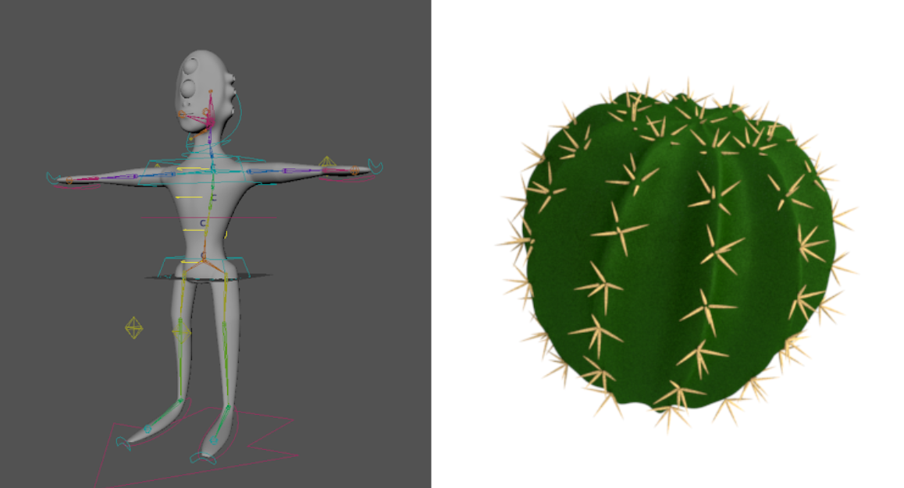
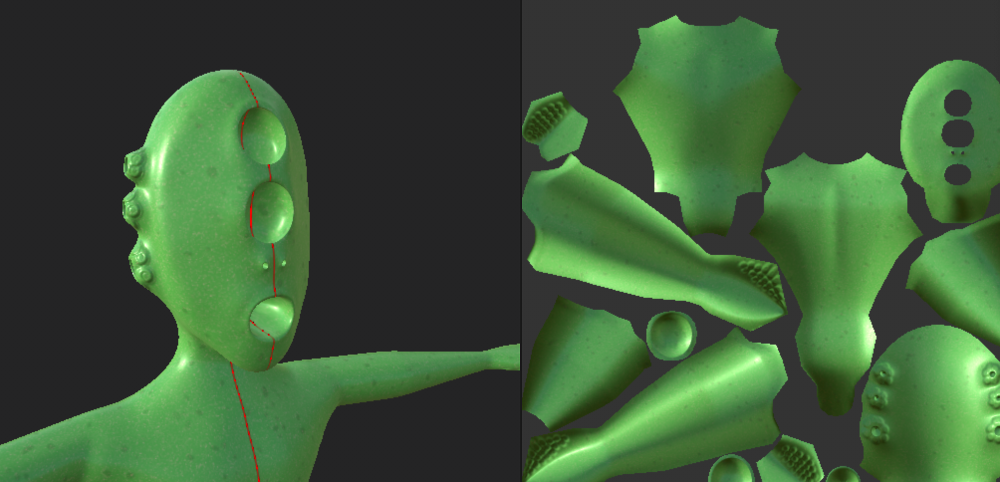
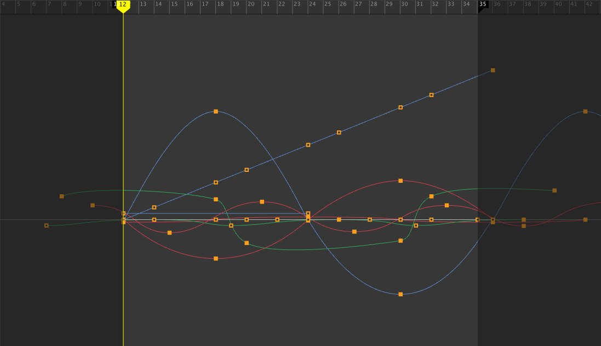

Blackbody Rendering Engine
As my final project for CS184: Computer Graphics and Imaging at UC Berkeley, I worked with fellow students Jen Hoang and Susan Lin to simulate the blackbody glow of metal objects at high temperatures. The resulting renders take into account non-uniform heat distributions and optical material properties, heightening realism.

Emission and Color Reproduction
We start by implementing the glow of perfectly diffuse emissive objects for some input temperature. In this case, our object is an ideal blackbody that absorbs and re-emits all energy falling upon it. After computing the radiance of our blackbody with Planck's Law of Blackbody Radiation, we convert this high dimensional spectrum to an sRGB color compatible with the computer display.
Reflectance and Polarization
We combined our estimate of blackbody radiation with the reflectance of the metal, allowing us to realistically render glow effects for various metallic materials. The final sampled color is a combination of reflected and emitted light, weighted according to Kirchhoff's Law of Thermal Radiation. We also explored how polarization of light changes glow effects and reflections.
Temperature Distributions
When raytracing, we sample the temperature at each point of intersection. These sampled temperatures are dependent on the type of temperature distribution given: uniform, linear, or noise-based. The linear distribution applies a smooth temperature gradient, and the noise map applies the pseudo-random Perlin noise function with control over temperature range and noise fineness.
Path Tracer Codebase
Our blackbody renderer was built as an extension of the CS184 Project 3: Pathtracer codebase. For this previous project, I implemented the core path tracing algorithms of a physically-based renderer, including ray-geometry intersection, direct and global illumination with Russian Roulette recursion, and adaptive sampling. Additionally, I developed microfacet material modeling and depth-of-field lens simulation.
For additional results, references, and information on our technical approach, see our report.